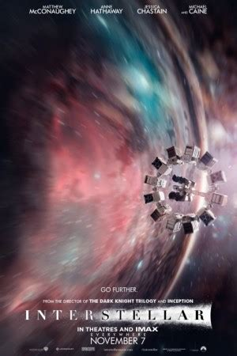

|
 |
Interstellar (2014)Directed by Christopher Nolan 169 min · Adventure, Drama, Sci-Fi |
At a glance
| Official title | Interstellar |
|---|---|
| Release date | 7 November 2014 (United States) |
| Release year | 2014 |
| Original language | English |
| Country of production | United States, United Kingdom |
| Runtime | 169 minutes |
| Genre | Adventure, Drama, Sci-Fi |
| Director | Christopher Nolan |
| Screenwriters | Jonathan Nolan, Christopher Nolan |
| Production companies | Paramount Pictures, Warner Bros. Pictures, Legendary Pictures, Syncopy, Lynda Obst Productions |
Plot synopsis
As Earth's ability to sustain its population declines, a former pilot turned farmer joins a team of explorers who travel through a wormhole near Saturn in search of a new home for humanity.
Main cast
- Matthew McConaughey
- Anne Hathaway
- Jessica Chastain
- Michael Caine
- Matt Damon
- Mackenzie Foy
- Casey Affleck
- John Lithgow
Awards and nominations
- Won the Academy Award for Best Visual Effects.
- Received 5 Academy Award nominations in total (also Production Design, Original Score, Sound Editing and Sound Mixing).
Production facts
- Physicist Kip Thorne served as executive producer and scientific consultant.
- The visual effects team at Double Negative worked with Thorne's equations to render the black hole.
- Parts of the film were shot in Alberta, Canada, and Iceland.
- Hans Zimmer's score prominently features pipe organ.